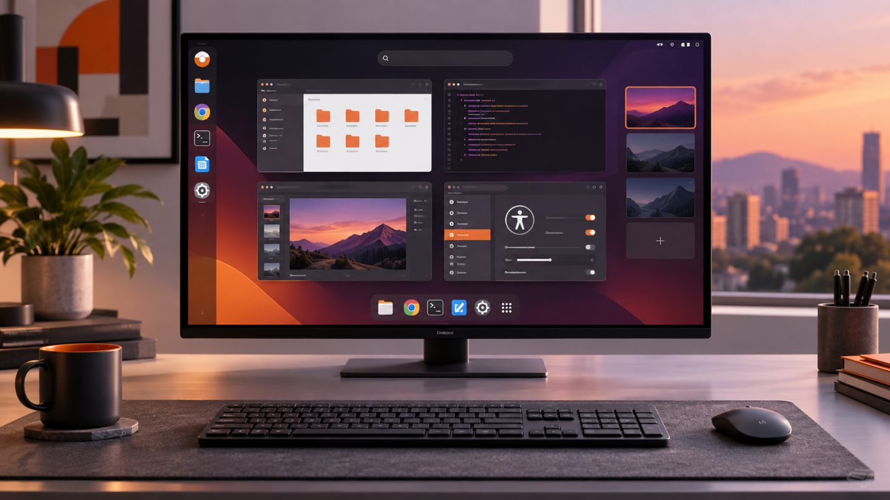

What Is New in Ubuntu 26.04 LTS
Ubuntu 26.04 LTS “Resolute Raccoon” was released on April 23, 2026 and receives standard security maintenance through April 2031. For users moving from Ubuntu 24.04 LTS, it combines two years of changes from the interim releases and 26.04 itself.
GNOME 50 and a smoother desktop
Ubuntu 26.04 ships GNOME 50, bringing refined Files and Calendar apps, Reduced Motion, stronger parental controls, major Orca improvements, clearer sound settings, and a configurable first day of the week.
Fractional scaling is enabled by default with optimized scale factors. Variable Refresh Rate, color management, HiDPI, and NVIDIA behavior on Wayland are also improved.
The Ubuntu Desktop session is Wayland-only
GNOME Shell no longer provides an X.org session, so Ubuntu Desktop now uses Wayland exclusively. X11 applications continue to run through XWayland, while other desktop environments may still offer their own X11 sessions.
Test remote-control, screen-capture, specialist-device, and legacy-driver workflows before upgrading production workstations.
Search for Snap apps and the web
GNOME Shell global search can discover available Snap applications and initiate a web search in the default browser. Both providers can be disabled in Settings.
Better Snap desktop integration
Snap applications using XDG Desktop Portals integrate more naturally with files, folders, cameras, notifications, and USB devices. Portal permissions can be managed from GNOME Settings.
New default applications
| Area | New app | Highlight |
|---|---|---|
| Papers | Based on Evince, modernized with GTK4 and some Rust | |
| Images | Loupe | Replaces Eye of GNOME and uses Glycin |
| Terminal | Ptyxis | Container integration and session restoration |
| Monitoring | Resources | CPU, memory, GPU, network, storage, and power |
HDR, remote desktop, and accessibility
The GNOME 47–50 cycle adds HDR, HDR screen sharing, hardware-accelerated remote desktop, extended virtual monitors, multi-touch, and better NVIDIA stability. The desktop installer also fixes important screen-reader barriers.
ARM64 and Raspberry Pi
Ubuntu expands its generic ARM64 Desktop image for UEFI systems, virtual machines, and selected Windows-on-Arm devices. Raspberry Pi receives a more reliable boot layout that tests new boot assets before committing them as the known-good set.
Requirements and support
- Desktop recommends a 2 GHz dual-core CPU, at least 6 GB RAM, and 25 GB storage.
- Server requirements can begin around 1.5 GB RAM and 4 GB storage, depending on workload.
- Standard LTS maintenance lasts five years, with Ubuntu Pro extending ESM to ten.
Before upgrading
- Back up data and verify recovery.
- Fully update the current release and read current known issues.
- Test software and drivers that depend on X11.
- Disable unsupported third-party repositories.
- For production fleets, validate a point release on representative hardware first.
Conclusion
Ubuntu 26.04 LTS centers on a modern Wayland desktop, GNOME 50, accessibility, new hardware, and better sandboxed-app integration. Its long support window is the main organizational benefit, but upgrades should be driven by real application and device compatibility.